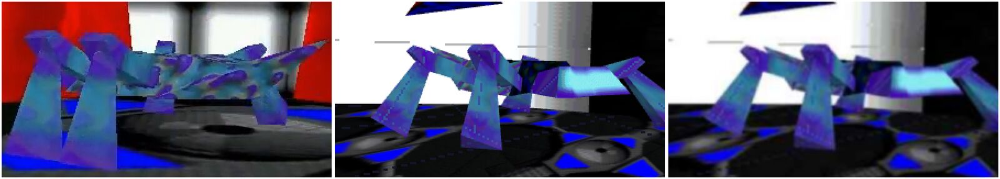
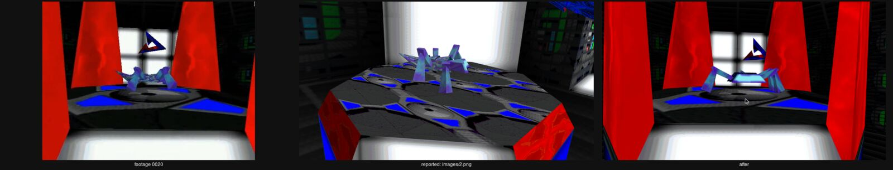
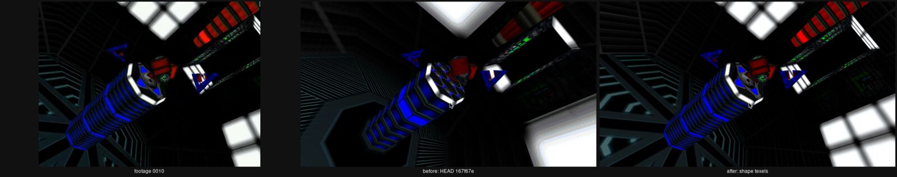
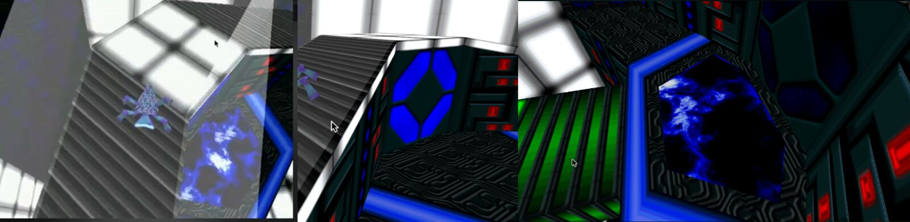
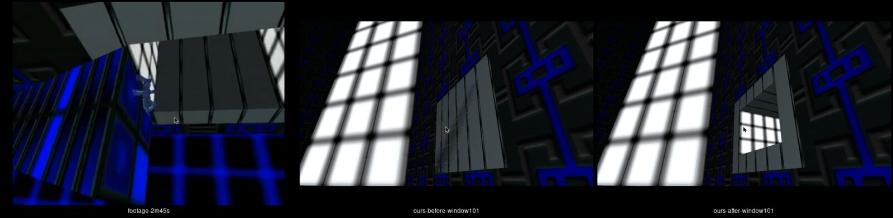
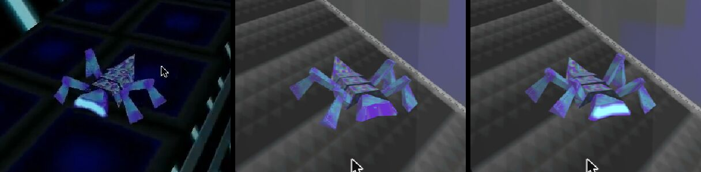
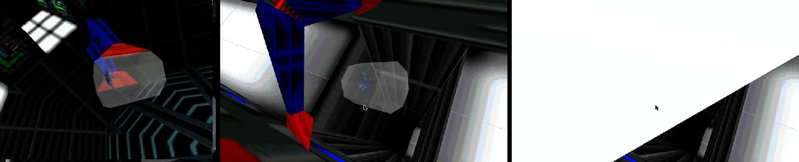

A creature that doesn't take orders
Galapagos: Mendel's Escape (Anark Game Studios, published by Electronic Arts, 1997) is a puzzle game where you never control the protagonist.
Mendel is a four-legged synthetic organism driven by what Anark called NERM: a self-organising controller that learns from feedback. You click on the environment — bridges, fans, platforms — and Mendel, sensing with infrared "sonar", decides what to do about it. Kill him too often and he regenerates more neurotic. Guide him well and he grows confident.
The game targeted Windows 95, DirectX 5 and a 90 MHz Pentium. Today it doesn't run without emulation or compatibility shims. The goal of this project is the opposite of emulation: understand every file the game reads, then write a new program that reads them the same way — a recomp — in Rust, compiled to WebAssembly.
What's on the disc
A CD image is just a sequence of 2048-byte sectors in the ISO 9660 format. Sector 16 holds the volume descriptor; inside it, a pointer to the root directory. Directories are files of variable-length records. That's the whole filesystem — we read it in 80 lines of JavaScript.
| Path | Size | What it is |
|---|---|---|
| setup.exe | 125 MB | A Wise installer. The game executable hides inside. |
| install/data/worlds | 126 MB | Everything else: geometry, textures, sounds… One opaque archive. |
| install/data/0 … 10 | 0.5–4.5 MB | RAD Smacker v2 files. 0 is 640×240; the rest claim to be 4×4 pixels. |
| redist/directx | — | DirectX 5 redistributable. We won't need it. |
| ip.exe, eahelp.hlp | — | EA's support utility and help file. |
The first surprise: no galapagos.exe anywhere. It is only created when the
installer runs. To read the game's code, we'd have to unwrap the installer without running it.
Unwrapping a 1997 installer by hand
setup.exe is 125 MB, but its code sections add up to about 28 KB. The rest is an
overlay — bytes glued after the end of the program, which Windows simply ignores
when it loads it. The strings WiseMain and STUB32.EXE identify the
packer: Wise Installation System.
With no table of contents, the natural first idea is brute force: try to inflate at every byte
offset. It produces garbage fast. At offset 0x6e3a, three bytes happen to be a
valid DEFLATE stream that decodes to the single character "0". Random data is full
of such accidents.
The fix is the CRC trailer. A real member is followed by the CRC-32 of its own content; an
accident almost never is. The first candidate that passes is at 0x6e51. After that
no more searching is needed: each stream tells us where it ends, we skip its 4-byte CRC, and the next one
starts right there. Forty members fall out, every checksum matches, and member 22 is a 710 KB
executable full of strings like "Are you sure you want to quit Galapagos?".
# tools/wise_extract.py — the whole idea
pos = first_stream_with_valid_crc(overlay)
while pos < len(data):
payload, used = inflate(data, pos)
assert crc32(payload) == u32(data, pos + used)
save(payload)
pos += used + 4Reading the machine code
We load galapagos.exe into a decompiler (Ghidra, driven through the REA toolkit).
It finds 2,293 procedures in 372 KB of x86 code compiled with Microsoft Visual C++.
No symbols, no debug info. Function names are things like FUN_004366b0.
The strings are the first map. Error messages are written for programmers, and they name the subsystems they belong to:
"No source texture for cache slot"a software texture cache"Too many polygons of a given texture"geometry is grouped by texture"USoundServices :: CreateSoundSample"C++ classes with a U- prefix"Mendel NERMs (*.mnd)"Mendel's brain is saved separately from the game
Following who references the string "Worlds" lands us in FUN_004366b0.
It doesn't load anything. It calls SearchPathA twelve times — for 0
through 10 and Worlds — and counts how many files exist. That's how
the game checks the CD is in the drive. It also tells us the whole runtime data set is just these twelve files.
Inside the worlds
126 MB, no magic number, no compression, no checksum. Just a raw dump of C++ objects, each class reading its own fields in order.
Finding the loader the decompiler missed
The string "Worlds" has three references. One is the CD check from chapter 03. The other two
sit in code Ghidra never turned into a function, because it's only reached through a C++ vtable,
a table of method pointers that static analysis can't follow. A raw disassembly listing fills the gap:
the game opens the file exactly once, wraps it in a 4 KB buffered stream, and from then on every loader
just seeks and reads. On a 2× CD-ROM a seek costs about 100 ms, so you open the file once and stay inside it.
Clues that it was made on a Mac
The game is a Windows/x86 build, but the data gives away where it was authored:
f9 f9 ed ed f6 f6QuickDrawRGBColor: three 16-bit channels with the byte doubled; the engine keeps the high byte0x2b110000a MacFixed16.16 sample rate: 11025.0 Hz, with a "base note" of 60 = middle CcnEMthe FourCC'MEnc'written little-endian, so it reads backwards in a hex dump
What's in it
| Block | Format | What we found |
|---|---|---|
| pictures | palette + 8-bit pixels | 39 UI screens, e.g. the "LEVEL / TOTAL" time score with Mendel in chrome |
| font | 570×11 strip | 95 ASCII glyphs, 6 px wide |
| sound sets | PCM, 4 copies | each sample stored at 8-bit 11 kHz, 16-bit 11/22/44 kHz, one copy per "Fidelity" setting |
| 8 world sections | see below | environment, palette, textures, sounds, objects |
Each world carries a 256-colour palette and 22–38 textures of 128×128 pixels. The engine caps it at 40, which explains the assert string "Not a vaild texture index". Between palette and textures sits a 256 KB block that looked like textures but isn't: it's a 32 × 32 × 256 lighting lookup table. In 256-colour mode you can't multiply a colour by a light level, so the software renderer looks up "palette entry c at brightness l" instead.
Then come the objects, each tagged with a FourCC that picks its C++ class: Objt,
Tele, Save (the save pads from the manual), Pred (predators),
Cmra (camera paths), Voic… Every record starts with seven absolute "block end"
offsets. That design means a reader can skip any block it doesn't understand, which is what lets us parse
all eight sections end to end long before we understand everything in them.
Meshes are refreshingly simple: a list of polygons as vertex indices, then 16-bit integer vertices relative to the object's position. There are no texture coordinates on disk. The engine appears to stretch each texture across a polygon's first vertices, plus a per-frame offset, so a polygon can scroll its texture. That's how animated surfaces like lava and water work.
Still unknown: the Mendel creature record, the opcodes of the clickable-object state machines, and why there are 8 sections when the box says 5 worlds.
The machines: 2,089 little state machines
Every bridge, fan, door and gate in Galapagos is a tiny program: a state machine stored next to its mesh.
Each object carries seven blocks. Once all seven were decoded, every one of the 2,089 objects in the eight sections parsed exactly to its recorded block boundaries. That's the best evidence a format has been understood. It also showed there's no class-specific data at all: a teleporter and a bridge differ only in the C++ method called when their state machine fires.
States, transitions, conditions
A state has entry actions: switch the appearance (which textures show), start a motion path, morph the vertices, play a sound, trigger the class behaviour, or jump to another state. Transitions are OR-ed groups of AND-ed conditions, drawn from 23 opcodes:
clickeda ray from the camera hit one of my polygons this tickticks_in_state ≥ ntimers: "after 2 seconds, close the door"event: touchedMendel is standing on me (the event bubbles up to parent objects)object N in state Swiring: "the bridge extends when the switch is on"rand() % 100 < pa little unpredictability, for predators
Each tick runs in two passes: first every machine looks at the world and decides, then all decisions are applied together. Nothing sees another object's change until the next tick. It's the same trick as double buffering, and it makes the simulation independent of object order.
Motion, picking, and the camera
Platforms move along keyframed paths (position, rotation, step count), expanded into one pose per tick by integer interpolation. A full turn is 1024 units, the classic fixed-point circle. Clicking casts a 25,000-unit ray from the camera, and the polygon's current appearance frame decides whether it can be picked. The same flag bits mark floors (bit 1), walls (bit 8) and hazards (bit 30). The camera is attached to the floor: every polygon has a camera key, and when Mendel steps onto it, that key's position and one of 33 motion styles take over. That's where the game's sweeping, cinematic camera comes from.
Why 8 sections when the box says 5 worlds
The gates answer it. The route is 0 → 1 → 2 → 3 → 4 → 5 → back to 2 → 6 → 7. Section 2 is a hub: the only one with all five save pads, and the only one with two exits.
Mendel's mind
The box promised "the first game character with a mind of his own". The code shows that this was not marketing.
A body with no skeleton
Mendel is 105 vertices: a 34-polygon shell and two leg sets with 128 keyframes each. There are no bones and no inverse kinematics. One leg part holds the two legs on one side; the engine mirrors it for the other side and plays it half a cycle later. Turning is done like a tank, by running one side's cycle backwards. Two leg sets, a low and a high stance, are blended by the brain's posture output. He is the only model in the game with real texture coordinates on disk.
Senses: six rays and two feelers
Each "eye" casts three infrared rays (high, middle, and low to detect ledges) and reports how close the nearest hit is. Two feelers at the front override sight on contact. Right-clicking Mendel's left or right side holds that side's input at maximum for four ticks. To his brain, your touch feels exactly like bumping into a wall on that side.
NERM, decoded
The brain is three controllers: posture, speed and turn. Each is a 10-state Markov chain whose transition probabilities depend on the input, through a genome interpolated over nine knots. The controller's output is the average state over 200 random steps. Thirty genomes compete per controller. While Mendel moves, a cost accumulates (getting too close to things, turning toward light, and above all pain). Each genome drives for 65,536 "cost-ticks", then hands over to the next one. When all 30 have had their turn, the best 15 genomes are kept and the worst 15 are rebuilt from them with mutations. It's a (15+15) genetic algorithm running live inside a 1997 game.
There is no "neurosis" variable. When Mendel is hurt again and again, pain inflates the cost of whatever
genome was active, and evolution steers away from it. The cagey behaviour the manual describes is emergent.
A saved brain (.mnd) is exactly one 28,242-byte genome set. Our writer reproduces the five
brains shipped on the CD (one per "age" in the preferences) byte for byte.
Alive, in a browser tab
Porting the spec into the running engine (creature.rs) turned up things that reading code alone
hadn't:
- He's born on a floorthe start disc is the floor of a birth tube. (Our first port had him born on its ceiling: with the wrong "up", see Up is Z.)
- The intro is a ridethe disc hands its floor down a stack of four polygons, a capsule docks around the tube, takes over the floor and carries him for 133 s along a 1,992-frame motion path to the arrival pad; holding Space (the
STelobject) skips it - Riding platformshe lives in his polygon's own coordinates, so a rolling capsule rolls him too, with no special case (see Walking on polygons)
- Footsteps wake the worlddropped on a platform, his touch event climbs the folder chain and a sleeping upper level wakes within 20 ticks
The brain is the real one: the age-3 genome from the CD reads his two infrared eyes, three 200-step Markov chains drive slew-limited "muscles", and the genetic algorithm evolves while you watch: a new genome takes over every ten seconds or so, and every thirty turns the population breeds. His brain survives death and gates. Right-click his left or right side and he feels a bump there.
Watch him think: the live panel
You don't have to take our word for any of this. In the game, open Pause ▸ Quality of Life ▸ Show Mendel's mind, or press M. A panel docks beside the 3-D view (on a narrow screen it floats over it). It is not in the 1997 game, and it never changes what Mendel does: it only reads him.
- Senseshis two eyes seen from above, three rays each: high, middle, and the dashed ledge ray that runs under the floor. A ray is coloured by what it hit (floor, wall, hazard, or a drop at a floor's edge). The bold one is the ray the eye believed, the nearest. A cross marks a polygon the eye doesn't count, which only hides what lies behind it. The arcs show his reach: when he stands tall he looks further and narrower.
- Touchthe two dots at his front corners are the touch points. They turn lime when he bumps into something and blue when you right-click him. A click lasts four ticks, so the engine counts clicks and the panel keeps the dot lit long enough to see.
- Musclesfor each controller, ten dots are the Markov chain, and the lit one is where this tick's walk ended. The hollow marker is the chain's output, the muscle's target. The bar is the muscle itself, which chases the target at a limited speed. That smoothing is why a twitchy brain still walks smoothly.
- Learningthirty squares per controller are the population; the lit one is the genome on trial. The bar shows how far its trial has got, the number is its running cost (lower is fitter), and the panel says when the next one takes over. The speed controller's trial is exactly 257 ticks. Posture and turn share one cost and count faster when he sees more, so they take 128 to 683 ticks. When the population breeds, the whole panel flashes and the cost graph gets a lime line.
- Statemode, affliction with its countdown, the seconds left on a delayed lethal floor, pain and deaths, and the polygon he stands on.
- Moodone line in plain words ("cautious: turning away from the wall on his left"). This is our interpretation of the numbers above, and the panel labels it that way: the game has no mood variable, only the costs.
Under the hood, the engine fills a 109-number snapshot (creature/mind.rs) only when the panel
asks for it, so a closed panel costs nothing. The senses record what each ray met as they cast it, which
the original threw away at the end of every tick. Two tests check the snapshot against Mendel's own fields,
one of them through the same WebAssembly export the page calls.
Some parts are honest stand-ins, each marked // inferred: or // not in the original:
in the code. Our first controller was one too: a ray-cast stand-in, until we ported the original walker.
Afflictions: what the floor does to him
The readme only hints that some places "retard his development". The code is precise: every floor polygon carries four bits that name one of twelve afflictions, applied for as long as Mendel touches it. They change his body and senses, never his brain's bookkeeping. A shield (one minute) makes lethal floors harmless and shimmers his skin. Speed (gait 53) and agitation (gait 40, with the "agitated" cry that had waited since chapter 06) change how he walks. Blindness zeroes both eyes for ten seconds. Confusion feeds them random 0-or-full readings, while the screen turns negative for thirty seconds. Three change gravity itself, and camouflage paints him with the floor's texture.
The screen effects are tiny palette scripts in a three-letter language (C, L,
D), stepped once per tick in 1997 by rewriting the VGA palette. We run the same scripts and apply
the result as a colour remap in the shader. On the CD only five of the twelve are used, and the agitating
floors are cruel: each is also a delayed lethal floor, so Mendel spends eighty ticks frantic before he
dies.
When the footage disagrees with the code
Two things in the video still looked different from ours: the intro's white light panels, which the video shows as grids of square panes and we drew as single large soft panels, and Mendel's legs, lavender there and teal here. This time the answer was mostly "measure before you fix".
- The legsaveraged over the pixels around them, the hue is 225–229° in the footage and 227–230° in ours. Same colour. The "lavender" is the video's chroma blur mixing his fine violet and teal streaks; run our frame through the same 4:2:0 subsampling and it turns lavender too
- The panelseach light wall is one quad with one texture: a white tile split in four by a dark cross. The exe gives every polygon the same texels, (0,127), (0,0), (127,0), at load (
0x42320d), and never changes them; the Direct3D path solves the texture map from exactly those (0x40b2f0). One copy per wall, which is what we draw - The videotextures at a fixed density instead, about one texel per 16 world units. A test render with that rule reproduces the panel grids, the pillar's stripes and the floor grid almost exactly. But the CD's own geometry is built for the exe's rule: in World 1, 128 of 283 neighbouring same-texture polygons line up under it, and only 2 or 3 under a fixed density. We concluded the footage came from a different build. That was wrong: see the next section

The search did turn up one real bug. In 1997 Direct3D sampled textures bilinearly with no mipmaps
(0x40a640). We used trilinear mipmaps and a fract() for wrapping, which drew thin dashed
seams across panels and floors. Plain bilinear with the sampler's own repeat removes them.
We were wrong: the world was never in shape
A day later the player put our start platform next to the video, and the comparison was hard to argue with. Tall red flame curtains surround the pad in 1997; ours had low red wedges on its sides. And, in their words, "the textures are badly applied". The footage was right, and the "different build" explanation above was a story we had told ourselves.
The real cause had been missing since the first light chapter: we never ran the objects' shape
morphs. Every object has a vertex-morph helper (1,679 of 1,679 on the CD), and almost every initial
state selects a shape. A shape frame doesn't only move vertices. It also carries six floats per polygon,
the texture coordinates of its first three corners, and slot 0x423530 copies them into
the polygon over the (0,127), (0,0), (127,0) defaults we had read as final. The analysis behind the panel
verdict had stopped at the defaults and missed those writes. So, through the level-load pass, the exe
re-maps every texture in the world before the first frame is drawn. We had drawn every polygon as one
stretched copy of its texture.


- Textureswith the shape texels, 90 % of the 8,512 textured polygons on the CD sit below 35 world units per texel, most around 16–23. That is the density measured in the footage. The light panels become a 4 × 3 grid of white squares
- The curtainsobject #70 lies flat and hidden at load. 60 ticks after Mendel is born, a 32-frame shape raises it, one frame per tick, and an appearance turns it red; at 90 ticks a last shape holds it at full height
- Collisions and beltsMendel's floors follow the shape frames, and the conveyor reads the shape's texels, so World 2's belt now carries him along its length instead of sweeping him off its side
The lesson is the one this making-of keeps relearning. When the reference disagrees with our reading of the code, the reading is the first suspect. "The footage must be another version" should be the last explanation, reached only after everything else has failed, and we reached it too early.
A ring is not a fan
Next the player noticed that the save pads didn't shimmer. In the video the pad is a pool of bright blue clouds sliding under a circuit-patterned rim; ours was a dark, still floor. The animation code was innocent. The pool's 32-frame flip-book was running all along, 37 units underneath a grey lid we had drawn ourselves. The rim is a single 14-vertex polygon: an outer and an inner hexagon joined by an invisible, zero-width bridge. We cut every polygon into a fan of triangles from its first corner. That's fine for convex shapes, but a fan across a ring fills its hole.

The 1997 Direct3D renderer knew better. Once per mesh, 0x40be00 flattens each polygon,
tests its corners for convexity (with an f32 tolerance of 800 that also accepts the bridge's flat corners)
and clips ears off concave ones, checking each ear with a point-in-triangle test. Only when every corner is
convex does it fall back to the fan. We now cut polygons the same way. 816 polygons on the CD are concave,
so every world gains holes and notches it never had in our port. Clicking uses the real outline too: a click
in the pool now reaches the invisible save pad underneath and offers to save, as it should.
The same mistake had been locking Mendel in. Walls with windows and doorways are rings too: one
"keyhole" outline that runs round the wall, along a zero-width bridge, round the opening the other way
and back. So our walls were drawn solid, and worse, they were solid, because our collision code
fanned polygons as well. The exe never triangulates for collision. World_Cast finds where a
ray crosses a polygon's plane, then counts crossings of the polygon's own edges (0x407830),
a classic inside/outside test on the real outline, so a hole stays a hole. Our probes now cast against
the ear-clipped triangles, which cover exactly the same area. Mendel walks through the walkway's window
into the corridor, the intro capsule enters the hall through its hexagonal opening without crossing a
single solid polygon, and in World 2 the belt carries him through a wall's opening onto the next belt.

The predator that never shipped
The exe knows a fourth hunter, PMan, and no world on the CD uses it. Its chase
(0x415c40) is the fork's, instruction for instruction, with two differences: it targets
Mendel the way the ball does, giving up and going home when he's camouflaged, and its bite carries no
lethal bits. Its probes reach his touch hull, his eyes see a hazard, he flinches, and he lives. A
fright, perhaps cut before release. With nothing on the disc to show it, we test it by re-classing
World 2's fork as a PMan and checking every formula: the overshooting aim, the growl every 16
ticks, the harmless bite.
Reading the shared chase this closely paid off for the hunters that do ship. The heading input is taken only when a predator re-aims and is then held, not recomputed every tick. And a predator's matrix is built from (yaw, pitch, roll) in the order the exe stores them, so the fork now turns its nose towards its prey.
Seven ways to leave the world
Until now, when Mendel died or a predator vanished, our port just blinked them. In 1997 these moments
belong to a small effects library (0x424520): seven kinds, each with a table of variants,
and a level designer picks one per lethal floor, portal or predator. Every effect works the same way. It
copies the owner's mesh, one vertex per polygon corner and one material per polygon, animates that
copy, and hands the real mesh back when it's done. Played backwards, the same code brings him back.
- 1 fadepolygons one by one glow white, dim and vanish (portals, falls). A 1997 bug survives: sorted lists store
i+1, so polygon 0 is never picked - 2 burstpieces fly out at random speeds, tumbling, under a white or pink flash
- 3 squashflattened onto the floor; backwards he springs up or grows from nothing, which is his birth under the beam at 0:15 in the footage
- 4 joltjitter and flicker, then a burst
- 5 melta long white glow, then pieces drop and bounce until they settle
- 6 stretchvolume-preserving squash and stretch, unused on the CD
- 7 shatterpieces leap up, fall, and land on the floor with a clink each
The effect also sets the rhythm of the game around it. Mendel stays "dying" until the effect ends, then respawns and plays it backwards before he walks again: 101 ticks out and 60 back for the common burst. A gate no longer switches levels on touch. The screen bleaches to white, as the footage does at 9:53, and only then does the next section load.
Predators are just machines that hunt
We expected predators to be second creatures with brains of their own. They're ordinary world objects (a mesh, appearances, a state machine) with a small hunting routine bolted on. It's the same trapezoidal mover the camera uses, aimed past Mendel and smoothed by the same tracker, with six probes around the body. A bite isn't a special case either: the probe touches Mendel's invisible click hull, which posts an event, which sets a lethal "surface" for his next tick. He dies the way he dies on a bad floor. Section 2 has a ball that hunts for a hundred ticks and then vanishes, a fork that always chases, and a polygon thing that circles his side; section 7's predators are lethal walls that explode away when a machine reaches the right state.
When a predator's probe hits something it bounces off, and for a while we only approximated how. The
routine behind it, 0x408c50, turned out to be a small, careful piece of geometry. It casts a
second short segment from the probe's tip along the wall's normal. If that segment crosses the wall
(the tip went behind it), the push is exactly the way back onto the plane. If it doesn't, there
is no push at all. The caller then adds a fixed nudge along the normal as stored in the polygon record:
an 8-unit margin for the camera, more for a predator. Two consequences we had wrong: a probe that
grazes a wall at an angle used to be pushed by its whole overshoot instead of the perpendicular
distance, and a predator touching a polygon from behind still counts as a touch. Only the push is
one-sided.
Walking on polygons, any way up
A modern character controller asks "where is the ground under me?" every frame. The 1997 walker asks a
different question: "which polygon am I on, and where on it?" Mendel's grounded position is not an
(x, y, z) at all. It's an object, a polygon, and three numbers in that polygon's own frame: how
far along it (u, v), and how high above it (h), plus a heading that
turns in its plane. His world position is re-derived from those every tick.
- Walking
uandvgrow by the cosine and sine of his heading; gravity pullshdown to his stance height (0x418060) - Crossing an edgethere is no adjacency table and no edge test. Five short probes shoot down along his own up, looking for any floor-flagged polygon. Same polygon: stay. Another one, on any object: attach, and carry the heading over the shared hinge (
0x411ec0,0x411f55) - Fallingno hit means he lets go: his last step becomes his flight velocity. Nothing stops him at an edge; only his brain's ledge ray keeps him back
- Wallsten hull segments, turned with his heading, push him out by half the overlap (
0x418450)
Two things fall out of that design for free. "Up" is whichever way his polygon faces, so a floor-flagged wall or ceiling is just another floor: section 1 has twenty sideways pads he stands on, and section 2 starts him upside down. And since his position lives in the polygon's coordinates, a moving platform carries him without a single line of platform code. The ray-cast stand-in needed a slope limit, a "new floors must face up" rule, sliding, a fall-out-of-the-world safety net and more; all of it is gone.
The walker would not work until two old world bugs were fixed. First, the object rotation order: a motion
key's rx is actually a yaw, ry a pitch, rz a roll. With the old order
the intro capsule finished its ride upside down and dropped Mendel into the sky. Second, motion paths have
three modes (add each frame to the pose, rest pose plus frame, absolute), and we had treated them all as
absolute, so section 1's bouncing pads jumped to the world origin. Both fixes change what you see, not only
where Mendel stands.
Saves follow the same idea. A respawn point or a pending teleport is now a place on a polygon, not a point in space, so the save format moves to GLPS v3; v1 and v2 files still load and are converted.
The films, and the music hiding in them
Files 0–10 are Smacker, RAD Game Tools' video codec, which shipped in thousands of
90s games. Smacker is built for 256-colour screens. Each frame is an 8-bit image with a palette, cut into
4×4 blocks, and every block is described by symbols pulled from four Huffman trees stored in the header:
TYPEwhat kind of block, plus a run length: "the next 12 blocks are all solid"MCLR·MMAPtwo-colour blocks: a colour pair, then a 16-bit mask choosing between themFULLblocks with all sixteen pixels spelled outvoid"unchanged since last frame": no data at all, which is where most of the compression comes from
Each of those trees is itself compressed. Its leaves are 16-bit values built from two smaller 8-bit trees, and three "recently used" slots act as a tiny cache. The decoder is about 900 lines of dependency-free Rust in smacker.rs, with every step commented.
File 0: the studio intro
640×240, 386 frames at 24 fps, 16 seconds: fire that gathers into Anark's green arched logo. The header sets the Y-interlace flag. The movie is stored at half height and drawn on every other line of a 640×480 screen, which halves the data a 2× CD-ROM drive has to stream.
On a 1997 CRT the phosphor glow blurred the black lines into a soft texture. On a sharp LCD, against a
mostly white logo, they turn harsh. Our first version made it worse: it scaled the canvas by a
non-integer factor with image-rendering: pixelated, which doubles some rows and not others,
and the result was moiré. The fix is to give the browser the 240 stored lines and let its bilinear filter
stretch them to 4:3. That's line doubling with interpolation, and it's the default. If you want the exact
original output, the Scanlines: original toggle draws the black lines and still scales smoothly.
Files 1–10: not videos at all
Their headers claim a picture of 4×4 pixels at 10 fps, and every frame type is 0x02, meaning
"audio only". They are about 8.5 minutes of music: 22,050 Hz, 16-bit, compressed with Smacker's Huffman
DPCM, which stores the difference between consecutive
samples instead of the samples themselves. Anark reused RAD's licensed player as a compressed music format
rather than writing one.
Playing it in the browser: the audio clock wins
The engine decodes the whole soundtrack first and gives it to WebAudio as a single buffer. On every
requestAnimationFrame, the page asks which frame belongs to the current audio time and decodes
forward to it. If the tab stutters, we drop frames; the sound never drifts.
// web/src/movie.js
const want = Math.floor((audioCtx.currentTime - t0) / secondsPerFrame);
while (shown < want) { pixels = movie.nextFrame(); shown++; }The new engine
Why Rust, and why no bindings generator
The format readers have to run in two places: natively, for tests against the real files, and in
the browser. Rust's wasm32-unknown-unknown target gives us both from one codebase, and the
whole engine, Smacker decoder included, is about 50 KB of WebAssembly.
We skip wasm-bindgen on purpose. The boundary is a handful of
extern "C" functions that exchange pointers into WebAssembly memory. It's less convenient,
but you can read all of the JS/Rust glue in one sitting.
// web/src/engine.js
const ptr = wasm.alloc(bytes.length);
new Uint8Array(wasm.memory.buffer, ptr, bytes.length).set(bytes);
wasm.worlds_section_count(ptr, bytes.length); // → 8First light: walking around a world
Before any game logic, we can already look at the levels. world.rs flattens a section's
objects into one array of triangles and one stack of textures, and WebGL2 draws the whole world in a single
call using a TEXTURE_2D_ARRAY. Three decisions were needed along the way:
- Texture coordinatesnone on disk; the exe's polygon initialiser gives the first three vertices texels (0,127), (0,0), (127,0), which defines an affine map across the polygon
- Lightingat first a gentle Lambert term plus a fade-to-black with distance, our stand-in; later replaced by the original's own formulas, see Lighting, the 1997 way
- Which way is upZ, floors face +z. Our first guess was "Y points down" (rendered Y-up, every tower hung from the sky, and Y-down looked right from far away); it took the camera port to prove it wrong, see Up is Z
Footage as a test oracle. The first viewer looked wrong next to a 1997 gameplay video: too dark, and the grid textures didn't line up with the panels. Re-reading the polygon initialiser showed the cause. We had used v0 as the texture origin, but the engine uses v1, with u along v1→v2 and v along v1→v0, so every texture was transposed and mirrored. With that fixed, plus the brightness the footage shows, the cylinders, grids and ladders match the video.
A world is 1,500–5,300 triangles, roughly what a 1997 software renderer could push at 640×480 on a Pentium 90. A phone GPU today draws that in well under a millisecond.
Bringing the machines to life
sim.rs ports the 24 Hz object loop. JavaScript owns the clock: each animation frame it works
out how many ticks real time requires (at most five, so a tab returning from the background doesn't
fast-forward) and asks the engine to run them. Three kinds of change come back across the boundary, each in
its cheapest form:
- Moving objects16 floats per object; the renderer re-reads every transform each frame
- Appearance changespatched in place in the vertex buffer, uploaded as one dirty range with
bufferSubData - Side effectsa short list of events: play music track n, play sound s, go through a gate to section k
Clicks work the way they did in 1997. The page turns the mouse position into a ray (and checks itself by projecting a point on that ray back to the same pixel), the engine tests it against every pickable polygon, and the nearest object counts as "clicked" for exactly one tick.
A world that sleeps until Mendel arrives
The first live test was puzzling: almost nothing could be clicked. Instrumenting the simulation showed why. Two seconds after loading, 97 of section 0's 171 objects are inside disabled folders, groups the game switches off until Mendel walks in. It's level-of-detail for behaviour: in 1997 there was no CPU to spare for machines nobody could see. Our first guess was wrong. We hid disabled folders, and most of the world disappeared, while the gameplay footage shows complete worlds. So folders stop thinking, not drawing.
That makes Mendel more than the main character: his footsteps (the "touched" event, which bubbles up from a
floor polygon through its parent folders) are what wake the world up. Until he's in, a clearly labelled
debug switch, Wake every machine, ignores folders so you can poke all 2,089 state machines yourself.
The running game is also exposed on window.galapagos for DevTools:
// in the browser console, on the game page
galapagos.engine.sim.object(85) // → { position: [...], state: 2 }
galapagos.view.focus(galapagos.engine.sim.object(85).position, 12000)Tick zero: when a world wakes up wrong
World 2 had no Mendel unless the debug switch "Wake every machine" was on. Tracing the first tick showed why. Folder #193 has a single rule: "if machine #178 is in state 0, switch me off". #178 starts in state 1, but our port only queued initial states and entered them during the first tick. So on tick zero #193 saw #178 still in state 0, switched off, and took the start pad #194 down with it. One frame of a half-built world was enough to break the level.
The exe never shows that frame. Its object reader (0x4222d0) ends with a pass over every
object, folders included, that enters each initial state: the state is recorded and its entry actions
run, all before the first tick evaluates a single condition. We now load the same way. Two smaller
details came along:
- Live skipsa folder that switches off during a tick hides its contents from the rest of that same tick (
0x4284f0reads the skip count after applying each object) - Timers survivechanging state does not reset an object's tick counter (
0x42cfd0); only an action's explicit reset flag does
With that, every world on the CD spawns Mendel with the debug switch off: World 1 after half a second, World 2 after four, upside down on his start pad. What happens next is the original's doing: he walks onto the fast belt and it throws him off, again and again, until the player stops it.
The title is an object too
A player missed the huge chrome GALAPAGOS that greets you in World 0. We had assumed a title belongs to
the game shell, drawn after the intro movie. It doesn't: it's world object #59, the only one of class
Over on the CD, a little state machine like the others. It waits 40 ticks, then fires an
"overlay" entry: picture 0, centred, with the white flash. 150 ticks later a second entry takes it down.
The renderer blits it as a DirectDraw surface whose transparent colour is its own top-left pixel, and it
appears and disappears in a single frame, with no fade. The footage agrees to the frame: up at 1.7 s
under the flash, down at 8.0 s. We draw it on a 2-D canvas over the 3-D view, at the size the original
picks for the current view.
Why the platforms stuttered
The player put it well: Mendel's animation was almost perfect, while every platform seemed to "jump". Two causes, one of them ours to fix and one of them nobody's fault.
- A smoother we never ranthe motion-path loader (
0x428cf0) quietly post-processes paths with more than two keys: every frame runs through a critically damped alpha-beta tracker in 16.16 fixed point (0x406b90), then the last stretch is re-interpolated onto the exact final key. Our notes had called it an "unknown post-process". 108 of the CD's 1,516 paths need it; on the intro capsule the worst tick-to-tick change in speed drops from 536 units to 81 - 24 ticks on a 60 Hz screenin 1997 the game drew once per tick, so a platform moved in even steps. A browser draws two or three frames per tick, and an object that only moves on some of them judders. Like the camera before it, objects and Mendel are now drawn blended between the last two ticks, in step, so he stays glued to whatever he rides. Teleports and other cuts are drawn as they are, never blended. This one is not in the original; it's what the original looked like at its own frame rate
One click, one jump
The player found a platform in World 0, past the white corridor and under a spinning ice-blue blade,
where one click made Mendel jump and keep on jumping. In the original he jumps once. The platform (#110)
is a trampoline you switch on: a click selects a six-frame appearance whose first frame turns its floor
polygons into a bouncy wall (flags 0x510, bounce speed 100 a tick), and Mendel's airborne
bounce throws him up.
What switches it off again was the part we'd missed. That appearance doesn't loop, and the exe treats a
non-looping appearance as a one-shot: when it's selected, the looping state it replaces is
remembered (+0x14c, 0x423350), and when the flip-book wraps
(0x42e050 returns nothing) the step (0x423810) puts that state back, floor flags
and all. So the trampoline lasts exactly six ticks. We stopped one-shots on their last frame and never
went back, so the floor stayed a trampoline forever. 418 one-shot appearances on the CD share this rule:
every clickable pad in the game. A click "on Mendel" lands on the platform too, because his click hull
isn't pickable by the mouse (mask 0xfffffffe).
Sound: four copies of everything
Every sample is stored four times in the archive: 8-bit at 11 kHz, then 16-bit at 11, 22 and 44 kHz, one copy per "Fidelity" setting. A 1997 PC with 16 MB of RAM had to pick one. A browser doesn't, so we always take the best copy.
The world's sounds come from emitters attached to objects: up to three alternative sounds, a pitch
and a random pitch variation, a volume, and a near and a far distance. That maps neatly onto WebAudio: one
PannerNode per sound at the object's position, with the camera as the listener. The box promised
"active-panning 3-D stereo sound"; this is the modern equivalent.
One bug was invisible until we counted. Our first version played the wrong sound every time, because an emitter's sound numbers are 1-based. The data proves it: read them as 1-based and only 1 of 1,467 references lands on an empty slot; read them as 0-based and 107 do. When the code doesn't say, the data often can.
Listening is the one test an AI co-author can't do, so we measured what an ear would notice instead. Effects, Mendel's cues and music all sit around −15 dBFS RMS, so the balance is sensible. There's almost no DC offset, so no clicks. About one effect in six has flat-topped clipping, but the independent 8-bit copies clip in the same places, so it was mastered that way in 1997 and stays. What we added is a gentle limiter on the master output, so several sounds plus music can't crackle when they stack, and a Sound test panel in the menu, for human ears.
Mendel has five sound cues of his own: landing after a fall, spotting a hazard with his infrared eyes, seeing certain surfaces, and a strong left/right imbalance, each followed by a short, partly random silence. Choosing which sound plays uses the game's random generator, not his brain's, so a sound can never change how he behaves.
Menus, rebuilt from resource tables
Windows programs keep their menus, dialogs and strings in a resource section, a small filesystem
inside the .exe. Decoding it gives the game's whole interface, word for word: a File menu (New,
Open, Import and Export Mendel NERM, Quit), a Preferences dialog with Resolution, View Size (Full to Petite),
Brightness (Darkest to Lightest), Volume, Fidelity (Low to CD Quality) and a "New Mendel Age" slider labelled
Newborn, 1, 2, 4 and 7 hours.
That slider explained the five brains on the CD: the slider position picks one, and "Newborn" gets a random genome instead. Our pause menu (Esc) keeps the original structure and wording, and every preference does what it said in 1997. Fidelity even switches between the four stored copies of each sound, so "Low" gives you the authentic 8-bit, 11 kHz crunch.
The menu's title is the chrome GALAPAGOS strip from the game's own archive. The more elaborate splash and
dialog banners live inside galapagos.exe, which is itself packed inside the installer, so the
browser can't reach them yet. Brains export as genuine .mnd files (28,242 bytes, like the
originals), so a Mendel raised here can be shared.
Save pads: two wrong guesses, corrected by the code
The manual says a save pad is "a blue, shimmering floor panel" you click while Mendel walks on it. We had
assumed the Save object class was the pad. The click handler says otherwise: the pad is any
polygon whose appearance frame carries flag bit 5, and the game checks that Mendel himself stands on such a
surface before opening the Save dialog. The Save class turned out to be a persistent
variable: ten numbers that survive section changes. The hub uses them to remember that you have already
done its first loop.
The second correction makes the manual's most intriguing promise concrete. A save takes a snapshot of the world: every object's state, timer, motion path and appearance, plus the spot where Mendel will respawn. It never includes Mendel's brain. When he dies, the world rewinds to the snapshot and he walks back in carrying everything he learnt. Opening a saved file is different: it restores the brain too.
The time screen between levels is drawn entirely from the level's picture: the original copies glyphs from a "0123456789:" strip at the bottom of the image, one by one, treating the top-left colour as transparent. We do exactly that in a few dozen lines. Saved games are our own documented format ("GLPS", about 52 KB), stored in the browser next to the cached CD.
The original camera, key by key
The designers never scripted a camera path. They gave every polygon of every object a camera key, and the camera ports that literally: when Mendel steps on a polygon, its key becomes the destination. A trapezoidal mover travels there (accelerate, cruise, brake to stop on the key), a critically damped alpha-beta filter smooths the result into the slightly lagging sweep of the footage, and the view is rebuilt from eye to Mendel with a roll measured in the frame of the floor he stands on. It is all integer maths, down to the engine's own sine tables, and it runs at 24 Hz; the browser only interpolates between the last two ticks.
Up is Z: correcting our first guess
The camera code kept saying something our engine didn't believe. It calls a floor "upright" when its
normal is (0, 0, 0x400). Mendel's contact record resets to that same vector. Every portal pad is
an octagon in the xy plane, facing +z. We had decided on day one, from a distant orbit view, that "Y points
down", and from far away a Y-down world looks fine. Up close it did not: next to the 1997 footage, our
Mendel clung to the side of the arrival pad and was born on the ceiling of his tube, while in the
video he stands upright on top of the pad.
The creature code settled it. The ten hull points are plain x, y, z triples in his own frame,
the last one being his feet at (0, 0, −450); we had read them as x, z, y to fit
Y-down. Airborne, gravity is added along his up vector, and leaving a surface resets it to +z. Walking
adds cos to the first surface coordinate and sin to the second, so a heading turns in the xy
plane. Two more findings fell out of the correction. Floors are flag bit 1, the bit the mover's floor
finder casts for, and walls are bit 8, which we had taken for "ground". A portal's offset is measured from
its polygon's first vertex, in the polygon's own frame, and on every pad on the CD it lands exactly on
the polygon's centre.
With +Z up, the intro plays as designed, with nothing scripted on our side. Mendel appears on the start disc, the floor steps down the disc's stack of polygons, the capsule takes over, rolls him through the sky and drops him on the arrival pad. The lesson for the rest of the project: a guess that "looks right" from far away is still a guess. Ask the code that has to live with it, here the camera.
The red disc that was never there
After the Z-up fix, Mendel was born on a red octagon, where the footage shows a dark disc ringed with blue
triangles. The red was a real texture (the same red clouds as the wedge pillars), so the texture wasn't
broken. The executable's frame applier (0x423730) explained it. A polygon's texture number
can be negative: −5 hides the whole object, −4 sets another object-level
flag, and −2/−3 mean "keep the previous texture". The start pad is a stack of four
polygons, one of them always −5, so the original never draws it. It is an invisible elevator floor,
and the dark disc with blue triangles is the room's floor underneath. We had hidden only that one polygon,
so the red layers below showed through.
A small lesson in determinism came with it. "Keep the previous texture" depends on what was drawn before, and our snapshot test caught that restoring a save no longer reproduced the picture exactly. On the CD those frames always sit inside flip-books, so "previous" now means the last real texture earlier in the same flip-book: the same picture, computed from state alone.
A byte that meant "solid", not "visible"
After the walker landed, Mendel stood sideways on section 1's pad #49, apparently on thin air. Every
animation frame carries an enabled byte, and we had read it as "draw this frame". The exe
disagrees: its frame appliers (0x423730, 0x423810) set texture, shade and scroll for
every frame and never look at it. Only the three routines that copy collision flags into the polygon
(0x42df50, 0x42e050, 0x42e130) test enabled > 0. So the byte
means "this frame changes what the polygon is", not whether you can see it. Pad #49 runs one real
frame followed by 31 "keep the texture, scroll a little" frames, so we drew it one tick in 32. Thousands of
flip-book polygons in every section had the same flicker; all are now steady.
The same misreading had broken clicks: a flip-book polygon was only clickable on its first frame. Picking
now reads the polygon's own flag array, as the exe does (0x408730).
Glass, and the ramps that were materials
In the footage the intro capsule is a pale, see-through prism with Mendel visible inside. Ours had no
glass at all: its twelve panes carry texture number −4, which we had never implemented. The
frame applier says what −4 means (0x423791): "this polygon is glass", and the Direct3D renderer
gives glass a draw bucket of its own (0x40f000) with four render states: no depth writes,
blending on, no texture, no culling. The blend factors, set once at start-up, are ONE, ONE.
So 1997's glass isn't transparent in the modern sense. It adds a little grey light onto whatever
lies behind it, which is why it washes the red interior out towards pink and shows as grey over black.
How much grey? Our first try used the polygon's ordinary light and came out as solid white: front and back panes both add, and each added far too much. The real answer came from the 62 "colour ramps" in every section, which we'd parsed back in chapter 04 and labelled "meaning unknown". They are materials: a base light, an over-brightening amount, ambient and directional factors. A pane's brightness depends only on its material, and the capsule switches material with its state: material 49 (base 0, nothing to draw) while docked, 17–19 during the ride. The glass appears exactly when the capsule takes off, as in the video. WebGL draws it the 1997 way: a last pass after everything else, Mendel included, with additive blending and depth writes off.
A day later the blinking was back on screen, with the fix already merged. We measured instead of guessing:
sampling every polygon's texture layer each frame in the running page found the exact old pattern (texture,
hidden, texture), and the engine the page had loaded was 352,381 bytes, the build from before the
fix. The browser had kept it: our local server sends no Cache-Control, so freshness was the
browser's own guess. With the current engine, ten seconds of section 0 show no polygon flicker at all. The
gameplay footage agrees: its flip-book surfaces are steady, and the only things that vanish are designed
state changes, like a blue pad that disappears in a sparkle. The engine is now fetched with
cache: "no-cache": the browser still caches it, but checks with the server first, so a
fixed bug can't come back from the cache.
Lighting, the 1997 way
With the materials decoded for the glass, our invented lighting (a soft Lambert term and a guessed distance fade) had no excuse left. The exe lights every polygon every frame, in three steps:
- A level
0x401b70: the material's base light, plus the directional light when the face turns towards it, halved and capped at the middle of 32 rows, plus the material's over-brightening. Normals are rotated with their object every frame, so a turning platform is relit as it turns - Two colours
0x40c330: below the middle row the level dims the texture (diffuse grey); above it the texture is full and the rest becomes a specular white added on top. That is why the footage's light panels burn out to white while red stays red - Fogper vertex, linear over 24,000 units of view depth, scaled by the material's last field. That field was the "unknown switch": it is the fog amount. The fog colour is black, or white when the section's background has any red (only World 1)
Flip-books animate the shade number, so blinking lights now really blink: the capsule's side panel steps
through levels 8, 12 and 16. The Brightness preference turned out to be a palette adjustment
(0x403130): each step pulls every palette channel a fixed fraction towards black or white,
and Standard changes nothing. A byte we'd taken for "brightness" in the colour code is really the red of
the current screen flash. The vertex now carries the material and the normal instead of a baked light,
and the shader does the rest.
A glowing head, and the backs of things
Next to the footage, our Mendel looked dull. His head should carry a bright cyan-white glow, and ours
didn't. We suspected his lighting first, but the exe lights him exactly like the world: one flat normal
per face, two materials (base 0.63, and 0.96 for the four faces at the front of his head). The difference
was a pair of numbers in his body file that we'd parsed as "unknown". They are a texture offset per face,
the same field world animation frames use to scroll textures (0x402420). Applied, they slide
skin 18's bright stripe onto his face and underside. That's the glow.

The same pass settled which side of a polygon is drawn. The software renderer's mesh draw
(0x402490) skips any polygon whose normal points away from the camera. The Direct3D path
gets the same result with culling on, by fanning each polygon backwards so that front faces arrive
clockwise on screen. So 1997 drew only front faces, except glass on objects that end with a glass
polygon, like the capsule. Panels meant to be seen from both sides exist twice on the CD, back to back:
84 such twins. The visible payoff is in the intro: riding behind the white light panels, the camera now
looks through their backs at the capsule, as in the footage, instead of into a white wall.

Turning him the way the exe does
Until now we drew Mendel by building a frame from his forward, left and up vectors and converting it
to object angles. That's correct geometry, but not the exe's. The mover has its own routine
(0x412180) that turns his polygon's normal and his heading into three render angles: the
normal's azimuth and elevation, stored when the level loads, plus the heading. The same three angles
go to his body and to his invisible click hull. We now use those. On ordinary floors, sideways or
upside down, the result agrees with the old one within a fraction of a degree. On a turned object like
the capsule, the exe measures his roll with a probe pitched at 0x380 where the rest of the
maths uses 0x300, so the 1997 Mendel leans up to about ten degrees off while riding it. We now
lean the same way. Slip or intention, it's the original.
The shield affliction got its last missing detail as well. Every tick it adds 8 to the u texture offset of all 78 of his polygons, so his skin slides by a sixteenth of a texture per tick, and the offsets are only restored, from a copy made at level load, when the shield ends.
The belt that really does throw him off
Section 2's green belt swept Mendel off its edge at 139 units per tick, and he died. That looked like a
units bug, so we redid the whole calculation from the exe. The texture scrolls by 8 texels a tick, the
polygon's texel-to-world map (0x41d6d0) stretches that to 139 units, and the conveyor step
(0x41dc30) moves him by exactly that. The belt runs from the first tick, across its width, and
Mendel walks onto it on his own about two seconds after birth. The port was right; it's the level that is
hard. Checking a number against the code before "fixing" it kept us from inventing a slower belt that never
existed.
Journal
- Unpacked the Wise installer, recovered
galapagos.exeandsmackw32.dll. Repository scaffolded: Rust workspace, ISO reader, OPFS cache, WebAssembly boot. - Smacker decoder in Rust: the Anark intro now plays in the browser, synced to its audio; files 1–10 turn out to be the soundtrack. Found and fixed a classic bug: a
display: gridrule overrode thehiddenattribute. - Interlaced intro: smooth line doubling by default, original scanlines as an option, and no more moiré from pixelated scaling.
- The
worldsarchive decoded down to meshes: header, UI pictures, font, sound sets, palettes, textures, a lighting lookup table, and 16 object classes. All 8 sections parse end to end. - First light: a WebGL2 viewer renders all eight worlds with their textures. The axis is Y-down.
- Compared against gameplay footage: fixed the texture origin (v1, not v0), brightened lighting, added distance fade.
- Two research tracks in parallel: the object state machines (all 2,089 objects parse exactly; gate table explains the 8 sections) and Mendel (body, walk cycle, senses, and the NERM brain, verified byte for byte against the CD's five brains).
- The worlds come alive: a 24 Hz port of the object simulation, with motion paths, appearance changes, music, gates and click picking. Discovered that folders put most of a world to sleep until Mendel arrives.
- Mendel is alive: born on the birth tube's ceiling, carried by the intro capsule, walking with his real NERM brain, waking folders with his footsteps, and feeling right-clicks.
- Sound: world emitters with 3-D panning, Mendel's five cues, the best of four stored qualities. Found that emitter sound numbers are 1-based by counting empty slots.
- Menus from the exe's resource tables: pause menu, Preferences with the original options (all working, including 8-bit Fidelity), new game by age, .mnd import/export.
- Save pads, world snapshots that rewind the world but not Mendel's mind, saved games in the browser, and the original time screen between levels.
- The original camera, ported from
Camera_Update: per-polygon keys, 33 styles, 12 eye modes, integer filters. - Correction: the world is Z-up, not Y-down. Mendel now stands on floors (flag bit 1), is born on the start disc, rides the capsule and lands on the arrival pad as in the footage. Polygons with negative texture numbers (collision geometry such as the birth tube) are no longer drawn.
- The red start disc: −5 frames hide whole objects (the start pad is an invisible elevator). Audio measured for clipping, balance and DC; limiter and Sound test panel added.
- All twelve afflictions (floor-driven, with palette-script screen effects) and all five predator classes, ported. Saves move to GLPS v2.
- The original polygon walker replaces our ray-cast controller: Mendel stands on sideways and upside-down pads, rides platforms in their own coordinates, and saves remember places on polygons (GLPS v3). Fixed the object rotation order and the three motion-path modes on the way.
- The "enabled" byte gates collision flags, not drawing: flip-book polygons (pad #49 and thousands more) stop flickering and stay clickable. Section 2's fast belt checked against the exe: 139 units per tick is the original speed.
- Glass:
−4frames are additive, untextured panes, and the "colour ramps" are materials. The intro capsule turns into the footage's grey veil when its ride starts. - The original lighting: per-polygon levels from materials, Direct3D diffuse plus specular, per-vertex fog (white in World 1), and Brightness as the palette adjustment it really was.
- Mendel's per-face texture offsets (his glowing head) and front-face culling as the exe does it, glass excepted.
- The seven transition effects (fade, burst, squash, jolt, melt, stretch, shatter) replace the blinking, for Mendel and the predators; gates white out before the level changes.
- Textures sampled like Direct3D (bilinear, no mipmaps): no more dashed seams. Mendel's legs and the light panels measured against the footage: the legs match, and the panels follow this CD's exe.
- Rotation conditions now read the motion-key axes (rx, ry, rz), not field offsets. All 37 on the CD test rz in World 5, so nothing visible changes.
- Mendel turned by the exe's own render angles (
0x412180), the capsule's lean included, and the shield's sliding skin. - Correction: the objects' shape morphs were never ported. They carry each polygon's texture coordinates, so the whole world was mis-textured, and they raise the start room's flame curtains. With them, the intro matches the footage. The "different build" verdict of the day before is withdrawn.
- Concave polygons ear-clipped as
0x40be00does: the save pads' rims no longer cover their shimmering pools, and 816 polygons across the CD regain their holes. - Collisions cast against the real outlines too: doorways and windows open, Mendel walks between rooms, and the intro capsule flies through the hall's opening.
- Platforms glide: the motion-path loader's smoother (
0x428cf0), and objects drawn between ticks like the camera. - A merged title "did not show": the browser was still running yesterday's
main.js.tools/serve.pynow serves everything withCache-Control: no-cache, finishing what the engine-only fix began. - One click, one jump: non-looping appearances are one-shots that hand back to the state they replaced (
0x423810), so World 0's trampoline platform switches itself off after six ticks. - A Quality of Life section in the pause menu, for comforts the 1997 game never had. Each feature registers its own setting in
qol.js: the menu draws the row, saves it apart from the original Preferences, and dispatches its shortcut. The 1997 game stays the default, so anything that changes pacing starts off, and every addition is labelled "Not in the 1997 game". The first setting is a frame-time meter. An empty Stats panel waits for its counters. - Quality of Life: Highlight clickable objects (off by default). The engine answers with the pick a real click uses, then asks the hit object's current state whether a click would fire a transition right now. All 1,340 click conditions on the CD depend only on what the registry already knows between ticks, so the glow is never wrong: World 0's lift lights up only while Mendel stands on it. Asking never counts as a click. A pick costs 0.05 ms.
- Autosave and Continue (Quality of Life, on by default). The catch was the original's Save, which also moves Mendel's respawn point to where he stands. An autosave that did that would make every death gentler. So the engine gained
game_autosave: the same GLPS bytes, but the snapshot is left alone. Saves are about 55 KB and take half a millisecond, once a minute and whenever the tab is hidden. Nothing is saved during the movie, on the time screen, or while Mendel isn't plainly alive. A reload kills an OPFS write halfway, so the save made on the way out is also parked synchronously inlocalStorage, and the newer of the two wins next time. Continue counts as the click that unlocks sound, and it skips the intro. - Remember the CD, skip straight to play (Quality of Life, off by default). Browsers still want one click before sound, so with the setting on that click becomes the real choice: once the CD is cached, the start screen offers Continue or New game and goes straight to the world, with no movie. The visit that reads the ISO, and any visit before the intro has been seen once, still plays it as in 1997. A quiet "Replay intro" link on the start screen brings it back, and so does a button in the panel, which plays it over the paused game. The menu stays logically open, so nothing ticks behind the movie, and a key listener registered before the menu's keeps Esc from closing it halfway.
- Quality of Life: four Accessibility options, all off by default. Colour-blind presets (a daltonisation matrix,
I + M·(I − S), applied last in the world shader in linear light, and as an SVG filter on the title); keyboard-only play (Tab walks the objects a click would set in motion, confirmed by the click's own pick, Enter clicks, T touches Mendel on alternate sides through a read-only side test); screen-edge markers for Mendel's cries, predators and save pads; and palette flashes at 35%. - Game speed ×1, ×2, ×4 (Pause ▸ Quality of Life, or
G). The simulation has a fixed 24 Hz timestep, so fast-forward is one multiplier on the real time fed to its clock: 48 or 96 ticks a second, the same deterministic ticks, with between-tick blending untouched. The five-ticks-a-frame cap still holds, so a slow frame makes the game slower rather than starting a spiral. Pause still pauses, music keeps its tempo, sounds keep their pitch (a sound repeated within one frame plays once), and the GALAPAGOS title plays at ×1. Off by default, like every change of pacing. - Mendel's mind, live (M): a panel shows his eye rays coloured by what they hit, his touch points (your right-click included), his chains and muscles, which genome is on trial, and the genetic algorithm breeding. It corrected our own chapter too: a genome drives for about ten seconds, and the population breeds every thirty genomes, not "twice a minute".
- World 0's GALAPAGOS title, which turned out to be an
Overworld object: up after 40 ticks under a white flash, down 150 ticks later. - The original camera is on by default from the moment a section loads, as in 1997, instead of waiting for Mendel to appear.
-
PMan, the unused fourth predator, ported and tested on a re-classed fork; the shared chase now holds its heading between re-aims, and predators face their prey. - The bounce response (
0x408c50) ported exactly, for predators and the camera: a perpendicular push only when the probe went behind the wall, plus the stored normal's nudge. - Level load enters every initial state before the first tick, as
0x4222d0does: World 2 (and World 1) now spawn Mendel without "Wake every machine". - Blinking reported again: traced to a browser serving the pre-fix engine from its cache. Checked against the footage; the engine is now always revalidated before use.